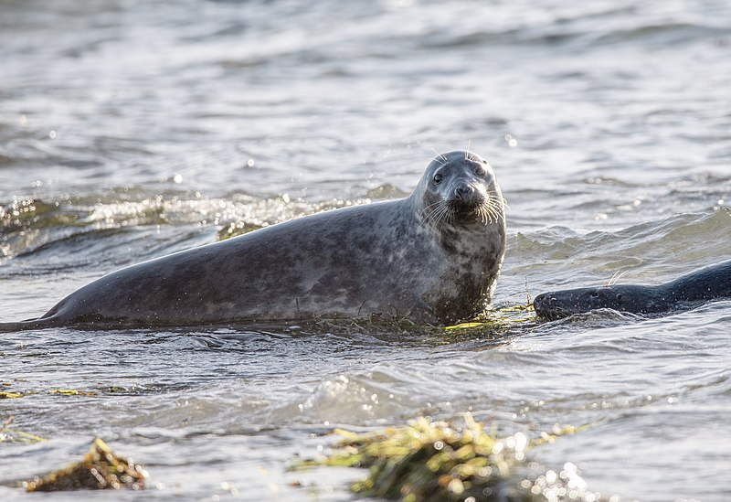
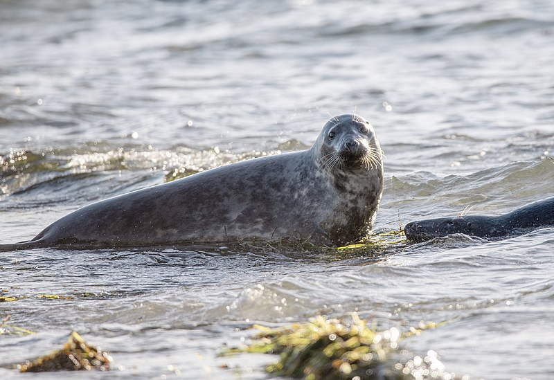

Prepare-se para Foca-lebrar!
Mergulhe e Descubra o Encanto Dessas Maravilhas Aquáticas
Explorando o Mundo das Focas

Prepare-se, porque estamos prestes a embarcar em uma jornada fascinante pela vida das focas! Esses adoráveis mamíferos aquáticos são verdadeiras estrelas do oceano e têm histórias "focasticamente" incríveis para contar. Do frio Ártico às praias ensolaradas, as focas dominam a arte de aproveitar a vida tanto acima quanto abaixo das ondas. Vamos mergulhar fundo no mundo do conhecimento sobre as focas!
Estilo e Movimentos

As focas são conhecidas por suas habilidades elegantes de natação, frequentemente rivalizando com as de nadadores olímpicos de alto nível. Suas nadadeiras, semelhantes a atletas bem treinados, as guiam com facilidade pela água, exibindo uma graça hipnotizante.
Um aspecto fascinante é sua isolação natural: camadas de gordura. Esse mecanismo interno de aquecimento permite que as focas prosperem em diversas temperaturas aquáticas. Imagine essas criaturas deslizando sob a superfície da água – uma dança harmoniosa com as correntes, seus corpos aerodinâmicos se movendo com fluidez e elegância. É um testemunho da adaptabilidade da natureza e da beleza impressionante da vida aquática.
Pontos de Encontro das Focas

Adivinha onde você pode encontrar essas criaturas fantásticas? Desde as geladas zonas polares até os ensolarados refúgios costeiros, as focas sabem escolher seus lares. Elas adoram relaxar em costas rochosas, exibindo seu pelo dourado pelo sol e, de vez em quando, fazendo um "cha-cha-slide" direto para a água.
Conheça a Turma das Focas
 



Conheça os VIPs (Mamíferos Pinnípedes Muito Importantes)! Temos a foca-comum, a foca-cinzenta, a foca-elefante (sim, aquela com o nariz hilário) e a feroz foca-leopardo. É como um elenco estrelado do oceano! Cada uma tem suas peculiaridades e habilidades, tornando-as as verdadeiras ícones do tapete vermelho subaquático.
Fatos Interessantes Sobre as Focas

Mergulhe no mundo das focas, essas encantadoras criaturas marinhas com um talento para o extraordinário. Desde prender a respiração como campeãs subaquáticas até usar seus bigodes como um GPS subaquático, essas maravilhas marinhas são realmente as estrelas do espetáculo.
As focas dominam a arte de segurar a respiração, deixando qualquer mergulhador profissional com inveja. E aqueles bigodes? São como o GPS da natureza, guiando esses exploradores subaquáticos em suas aventuras aquáticas.
Para um mergulho mais profundo na maravilha das focas, visite sealworld.com